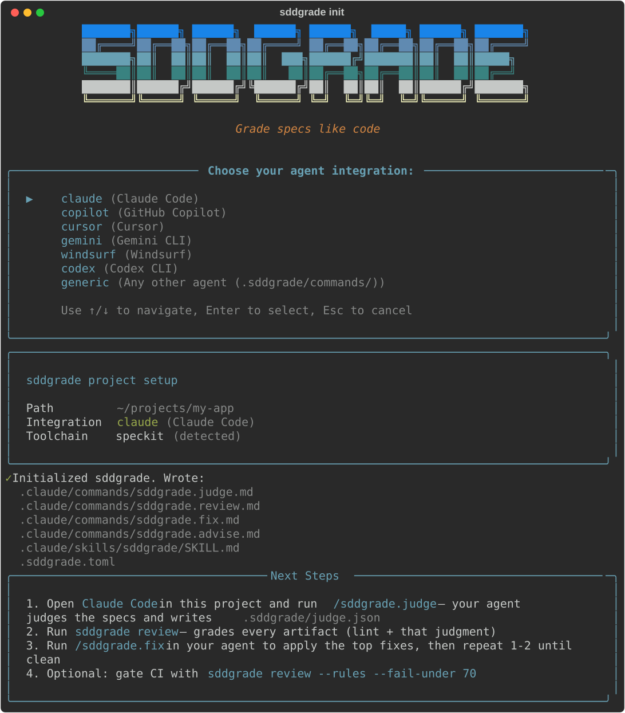
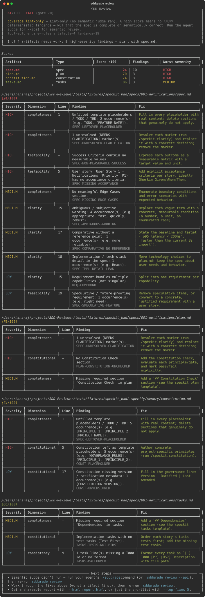

Announcement
Grade specs the way you grade code.
In spec-driven development, the spec is the program — yet nothing in the pipeline checks whether it's good enough to build from. SDD-Grader reviews Spec-Kit and OpenSpec artifacts with a hybrid engine: a deterministic linter plus a semantic judge that runs in the AI agent you already use. Every artifact gets a 0–100 score, every finding gets a fix, and your CI gets a gate.
╭─────────────────────── SDD Review ────────────────────────╮ │ 69/100 FAIL (gate 70) │ │ coverage lint+semantic · model=claude-fable-5 │ │ 3 of 8 artifacts need work; 4 high-severity findings │ │ — start with spec.md. │ ╰───────────────────────────────────────────────────────────╯ Artifact Score /100 Findings Worst severity spec.md 34 9 HIGH plan.md 50 6 HIGH tasks.md 58 7 MEDIUM research.md 100 0 — spec.md findings HIGH completeness :73 5 unresolved [NEEDS CLARIFICATION] marker(s) fix Resolve each marker with a concrete decision; remove the marker.
╭─────────────────────── SDD Review ────────────────────────╮ │ 84/100 PASS (gate 70) │ │ coverage lint+semantic · model=claude-fable-5 │ │ spec.md is clean; 2 artifacts still need work. │ ╰───────────────────────────────────────────────────────────╯ Artifact Score /100 Findings Worst severity spec.md 100 0 ▲ +66 — every fix applied plan.md 50 6 (control — untouched) tasks.md 58 7 (control — untouched) research.md 100 0 — ✓ Judged fresh: judgment hash-pinned to this exact content. Next steps · work worst-first, then re-run · --html report.html to share
Why this exists
AI writes your specs now. Nothing checks them.
Spec-Kit and OpenSpec made the spec the source of truth: agents plan and build directly from it. But a plausible spec is not a buildable one — unresolved clarifications, untestable stories, quietly contradictory plans, and template boilerplate all flow straight into code generation. Code gets review, tests, and CI. The document that generates the code gets nothing. SDD-Grader is that missing check.
How it works
A linter that proves, a judge that reads.
Two layers, honestly labeled. Every report states which layers ran, so a green check is never mistaken for more than it is.
Lint what's provable
Unresolved [NEEDS CLARIFICATION] markers, broken traceability
(story→task, entity→task, contract→test), constitutional gates, and a
research-backed catalog of requirement smells — ambiguity, escape clauses, passive voice,
unquantified NFRs, ISO 29148 per-requirement checks. Reproducible, so it can gate CI.
Your agent is the judge
The judge runs inside the AI agent you already pay for — Claude Code, Copilot,
Cursor, Gemini. sddgrade init scaffolds a slash command; your agent reviews for
genuine ambiguity, cross-artifact contradictions, and over-engineering, and writes a judgment
back. Judgments are hash-pinned to the exact content they reviewed — stale
opinions are refused, never silently reused. A key-based --api backend covers headless CI.
Numbers CI can act on
0–100 per artifact across seven dimensions, a concrete fix attached to every finding,
--fail-under exit codes, SARIF for GitHub code scanning, JSON, Markdown, a
self-contained HTML report, and score history with a terminal dashboard.
Case study
A real spec, graded and repaired.
We pointed SDD-Grader at an open-source Spec-Kit project and rewrote one file —
its spec.md — using only the grader's own fix suggestions. Same rubric before and
after. The two documents we left alone didn't move: the instrument responds to the document,
not to wishful thinking.
"The plan claimed every clarification was resolved while three were still open, and it designed an LLM into a server whose client already is one. The linter can't see that. The judge did."
What a score means
Honest about what it can prove.
Read the coverage line before you trust the number.
Lint-only means no known deterministic findings — required sections present, traceability intact, no lexical pitfalls. It is not a semantic guarantee, and the report says so on every run.
Lint + semantic adds the judge's reading: real ambiguity, contradictions across artifacts, over-engineering. Judges are language models — scores near your CI threshold carry noise, and the tool warns you when a run lands inside that band.
SDD-Grader complements Spec-Kit's own in-agent /speckit.analyze — it is the
external, scored, history-tracking gate, not a replacement for it or for human review.
Get started
A short sequence, like Spec-Kit itself.
Steps 1–2 once per repo; 3–5 every time the specs change. Writing the
specs stays Spec-Kit's job (/speckit.specify → plan → tasks) — sddgrade is the grade
between "the agent wrote it" and "we build from it".
1Install
uv tool install sddgrade --from git+https://\ github.com/hansraj316/sdd-grader.git@v0.3.0
Or zero-install with uvx, or pip from the release wheel.
2Set up (guided)
sddgrade init
Arrow-key agent selection, toolchain detection. Installs
/sddgrade.judge, .review, .fix, and
.advise (plus a skill in Claude Code) for Claude Code,
Copilot, Cursor, Gemini, Windsurf, or Codex.
3Judge in your agent
/sddgrade.judge
Your AI agent reviews the artifacts semantically and writes a judgment hash-pinned to the exact content it read.
4Grade in the terminal
sddgrade review
Lint + judgment merged into a scored, summary-first report — shown below.
5Fix in your agent
/sddgrade.fix
Applies the top fixes, re-grades, and reports the score delta. Repeat 3–5 until clean.
6Gate in CI
sddgrade review --rules --fail-under 70
Deterministic, reproducible gate on every PR that touches specs/. Add --sarif for code scanning.
What setup looks like
Real terminal output — the guided sddgrade init and a graded review, captured from the shipped renderer:


# .github/workflows/specs.yml — gate every PR that touches specs/
- name: Grade the specs
run: uvx --from git+https://github.com/hansraj316/sdd-grader.git \
sddgrade review --rules --fail-under 70 --sarif specs.sarif